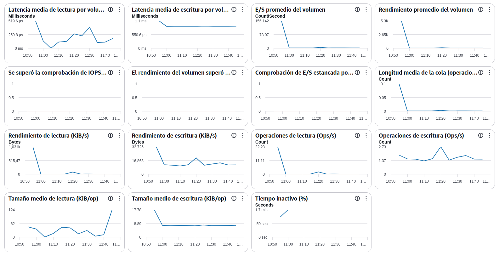

Manual básico de supervisión de Amazon EBS (Elastic Block Store)

AWS EBS Monitoring: Guía de Métricas para Operaciones
Introducción
La supervisión de Amazon EBS (Elastic Block Store) permite controlar el rendimiento y la capacidad de los volúmenes de almacenamiento utilizados por las instancias EC2.
Objetivos del administrador SysOps:
- Detectar cuellos de botella de almacenamiento.
- Validar que el volumen dispone de IOPS suficientes.
- Identificar problemas de latencia.
- Optimizar costes de almacenamiento.
- Anticipar necesidades de escalado.
1. Latencia media de lectura (Read Latency)
¿Qué mide?
Tiempo medio que tarda EBS en completar una operación de lectura.
Valores recomendados
| Latencia | Estado |
|---|---|
| < 5 ms | Excelente |
| 5-10 ms | Buena |
| 10-20 ms | Vigilancia |
| > 20 ms | Crítica |
Qué revisar
- Saturación del volumen.
- Aplicaciones con muchas lecturas.
- Falta de caché.
- Tamaño insuficiente del volumen.
Penalizaciones
- Consultas más lentas.
- Mayor tiempo de acceso a ficheros.
- Degradación del rendimiento de aplicaciones.
2. Latencia media de escritura (Write Latency)
¿Qué mide?
Tiempo medio necesario para completar operaciones de escritura.
Valores recomendados
| Latencia | Estado |
|---|---|
| < 5 ms | Excelente |
| 5-10 ms | Buena |
| 10-20 ms | Vigilancia |
| > 20 ms | Crítica |
Qué revisar
- Procesos batch.
- Bases de datos muy activas.
- Volumen insuficiente para la carga.
Penalizaciones
- Lentitud en transacciones.
- Aumento del tiempo de respuesta.
- Posibles bloqueos de aplicación.
3. E/S promedio del volumen (Volume Avg Queue Length)
¿Qué mide?
Número medio de operaciones esperando acceso al volumen.
Valores recomendados
| Valor | Estado |
|---|---|
| 0-1 | Normal |
| 1-5 | Vigilancia |
| 5-10 | Alto |
| >10 | Crítico |
Qué revisar
- Saturación de IOPS.
- Aumento repentino de actividad.
- Procesos concurrentes.
Penalizaciones
- Incremento de latencia.
- Cuellos de botella en almacenamiento.
4. Rendimiento promedio del volumen (Volume Throughput)
¿Qué mide?
Cantidad total de datos transferidos por segundo.
Valores óptimos
Dependen del tipo de volumen:
- gp3: hasta 1.000 MiB/s.
- io2: hasta 4.000 MiB/s.
- io2 Block Express: hasta 4.000 MiB/s.
Qué revisar
- Copias masivas.
- Backups.
- Procesos de migración.
Penalizaciones
- Saturación del throughput contratado.
- Lentitud generalizada.
5. Comprobación de IOPS superada (Volume IOPS Exceeded Check)
¿Qué mide?
Indica si el volumen ha alcanzado o superado el límite de IOPS disponible.
Valores recomendados
| Valor | Estado |
|---|---|
| 0 | Correcto |
| 1 | Problema detectado |
Qué revisar
- Configuración del volumen.
- IOPS provisionadas.
- Carga generada por aplicaciones.
Penalizaciones
- Aumento de latencia.
- Operaciones pendientes.
- Necesidad de aumentar IOPS.
6. Comprobación de rendimiento superada (Volume Throughput Exceeded Check)
¿Qué mide?
Detecta si el volumen alcanzó el límite máximo de throughput.
Valores recomendados
| Valor | Estado |
|---|---|
| 0 | Normal |
| 1 | Saturación |
Qué revisar
- Procesos intensivos de copia.
- Operaciones batch.
- Bases de datos con gran volumen de datos.
Penalizaciones
- Transferencias lentas.
- Tiempo elevado en operaciones de almacenamiento.
7. Comprobación de E/S estancada (Stalled I/O Check)
¿Qué mide?
Detecta operaciones bloqueadas o que no progresan correctamente.
Valores recomendados
| Valor | Estado |
|---|---|
| 0 | Correcto |
| 1 | Problema |
Qué revisar
- Estado del volumen.
- Estado de la instancia EC2.
- Problemas de sistema operativo.
Penalizaciones
- Errores de aplicación.
- Riesgo de indisponibilidad.
8. Longitud media de la cola de operaciones
¿Qué mide?
Número de solicitudes pendientes de ser procesadas por el volumen.
Valores recomendados
Idealmente cercana a cero.
Qué revisar
- Saturación de disco.
- Actividad excesiva.
- Insuficientes IOPS provisionadas.
Penalizaciones
- Mayores latencias.
- Menor rendimiento global.
9. Rendimiento de lectura (KiB/s)
¿Qué mide?
Cantidad de datos leídos por segundo.
Qué revisar
- Consultas intensivas.
- Procesos ETL.
- Escaneos completos.
Penalizaciones
- Consumo elevado de throughput.
10. Rendimiento de escritura (KiB/s)
¿Qué mide?
Cantidad de datos escritos por segundo.
Qué revisar
- Logs.
- Importaciones de datos.
- Procesos batch.
Penalizaciones
- Saturación del throughput.
- Latencias elevadas.
11. Operaciones de lectura (Read Ops/s)
¿Qué mide?
Número de operaciones de lectura realizadas cada segundo.
Qué revisar
- Cargas analíticas.
- Consultas frecuentes.
- Aplicaciones muy dependientes de lectura.
Penalizaciones
- Consumo elevado de IOPS.
12. Operaciones de escritura (Write Ops/s)
¿Qué mide?
Número de operaciones de escritura por segundo.
Qué revisar
- Bases de datos.
- Sistemas de logs.
- Replicaciones.
Penalizaciones
- Agotamiento de IOPS.
- Incremento de latencia.
13. Tamaño medio de lectura (KiB/op)
¿Qué mide?
Cantidad media de datos transferidos en cada operación de lectura.
Interpretación
- Tamaños pequeños → muchas operaciones.
- Tamaños grandes → menos IOPS y más throughput.
Qué revisar
Patrones de acceso de la aplicación.
14. Tamaño medio de escritura (KiB/op)
¿Qué mide?
Cantidad media de datos escritos por operación.
Qué revisar
- Configuración de bases de datos.
- Aplicaciones que generan ficheros.
Penalizaciones
Escrituras demasiado pequeñas generan mayor consumo de IOPS.
15. Tiempo inactivo (%)
¿Qué mide?
Porcentaje de tiempo durante el cual el volumen no recibe operaciones.
Valores orientativos
| Valor | Interpretación |
|---|---|
| >70% | Infrautilizado |
| 30-70% | Uso normal |
| <30% | Uso intensivo |
Qué revisar
- Volúmenes sobredimensionados.
- Recursos infrautilizados.
Penalizaciones
Ninguna a nivel técnico, pero puede indicar costes innecesarios.
Alertas recomendadas para producción
| Métrica | Alarma |
|---|---|
| Read Latency | >15 ms durante 15 min |
| Write Latency | >15 ms durante 15 min |
| Queue Length | >5 sostenido |
| IOPS Exceeded Check | Valor = 1 |
| Throughput Exceeded Check | Valor = 1 |
| Stalled I/O Check | Valor = 1 |
| Tiempo inactivo | Revisión si >90% de forma permanente |
Categorización
Indicadores de rendimiento
- Read Latency
- Write Latency
- Read Ops/s
- Write Ops/s
- Read Throughput
- Write Throughput
- Queue Length
Indicadores de capacidad
- IOPS Exceeded Check
- Throughput Exceeded Check
- Stalled I/O Check
Indicadores de costes
- Tiempo inactivo
- Volúmenes sobredimensionados
- IOPS provisionadas sin utilización
Indicadores de disponibilidad
- Stalled I/O Check
- Read Latency
- Write Latency
- Queue Length
Indicadores de necesidad de escalado
Los indicadores que más rápidamente anticipan la necesidad de aumentar capacidad en un volumen EBS son:
- Latencia de lectura superior a 10-15 ms de forma sostenida.
- Latencia de escritura superior a 10-15 ms.
- Queue Length superior a 5.
- Activación de "IOPS Exceeded Check".
- Activación de "Throughput Exceeded Check".
- Crecimiento constante de operaciones de lectura y escritura.
- Throughput cercano al límite contratado durante periodos prolongados.